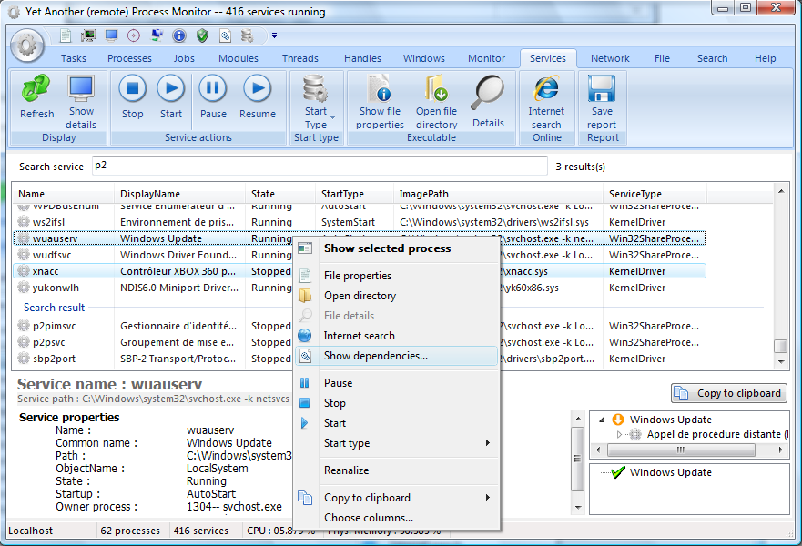
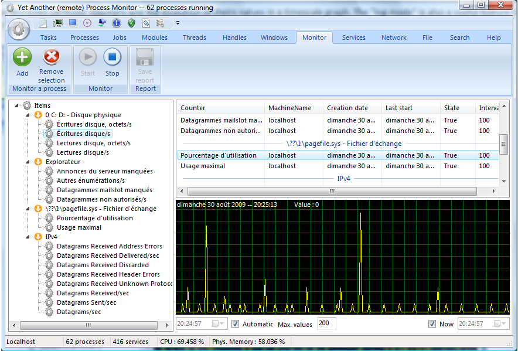
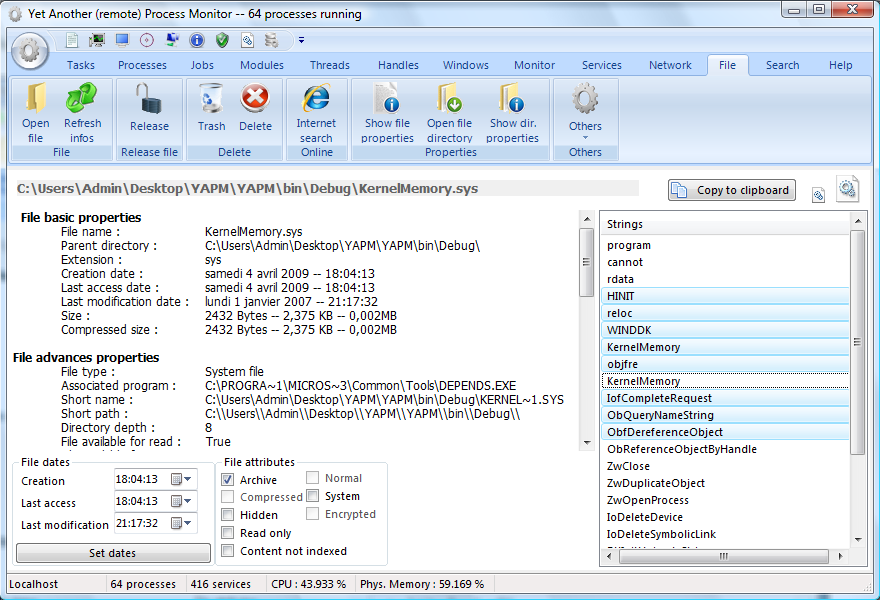
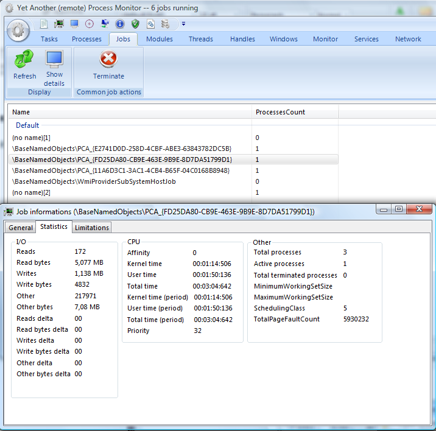
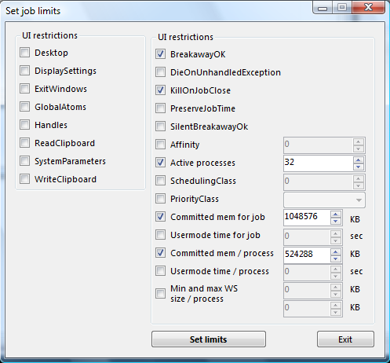
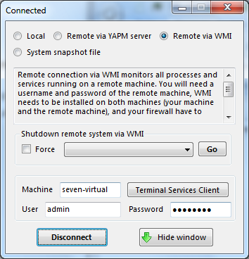

Yet Another (remote) Process Monitor
Yet Another (remote) Process Monitor
Home Features FAQ Forums Project Page Downloads Developer page Changelog Help
List of main features
The main purpose of YAPM is to display all informations availables about processes running on a local or remote system, and to update all these informations in real time. The application has four principal windows :
- the main window : displays the list of opened tasks/processes/jobs/services/TCP-UDP-connections in real time
- the process detail window : displays in real time all informations about a specific process. Double-click on a process to open this window
- the service detail window : displays in real time all informations about a specific service. Double-click on a service to open this window
- the job detail window : displays in real time all informations about a specific job. Double-click on a job to open this window
For all lists, it is possible to choose the columns to display.
Lots of informations and functions are available, here are the main :
Processes
YAPM is able to kill (simple kill, kill process tree, kill by 6 different methods), stop, resume, set priority, set affinity of processes (multiple selection), add processes to job, create dump file, reduce WS size...etc. . You can also choose the informations you want to display (more than 50 available). The processes are highlighted depending of their type (system processes, processes in job...). Colors are of course configurable.
Statistics & performance graphs
YAPM can display a lot of statistics about your processes. YAPM save a complete history of all statistics.
Token
YAPM is able to manage process privileges (you can enable/disable/remove them).
Memory
YAPM can display/release/change protection/decommit the memory regions in the virtual memory space of a process. You also can view it in a build-in hexadecimal editor.
Services
YAPM can shutdown, stop, resume, pause, delete, create and change start type of all services.

Monitoring
YAPM allows to see all available Windows perfmon' counters and the evolution of theirs values in a timescale graph. The "log mode" is also a useful feature to know what is done by a process in real time.

Files
YAPM can also manage your files. You can change dates/attributes, find string in file, encrypt, move/copy, delete...etc.

Search
YAPM allows you to search for a specified string into opened processes, modules, handles, windows...etc.
Job management
YAPM offers the possibility to add any process to new or existing jobs. YAPM also offers the possibility for the user to configure limits to the processes in jobs


Dependency viewer
YAPM offers the possibility to view dependencies of an executable/dll/driver...
Remote management
YAPM offers the possibility to manage remote processes of machines in your workgroup via WMI (nothing to install on the remote machine) or via a client-server architecture (with the server, all actions and informations are available, just like if it is a local machine). You can also shutdown, reboot, logoff... remote machines.

System Snapshot Feature
YAPM offers the possibility to save a complete snapshot of your system, and then, open the snapshot file and explore it on another system. It is a useful feature if you plan to post the snapshot file on a forum asking someone to analyze your system, for example if it's slow or buggy.
Last update of this page : 2009-22-11 01:00